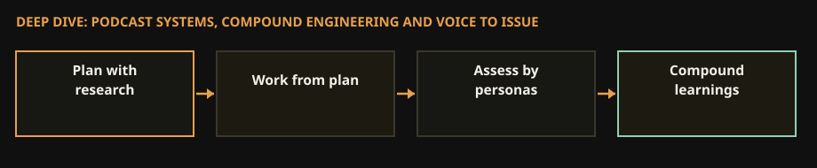

Deep Dive: Podcast Systems, Compound Engineering and Voice to Issue
Four transcript grade systems from How I AI and AI and I: Klaassen compound engineering in full, the Cora voice to issue pipeline, the Reddit feature capsule, and the Notion spec system. Confidence: High for the first two, Medium for the last two.

Compound Engineering: the four stage loop
Kieran Klaassen, How I AI, full transcript. The loop: Plan, Work, Assess, Compound. Each stage feeds the next, and the compound stage writes learnings that the next plan reads. The claim under the system: the tool gets better at your codebase each cycle, since the learnings live in files the planner searches.
Plan stage, in detail
- Three research sub agents run in parallel, each in a fresh context: codebase patterns, web best practice, and frameworks with the versions in use. On screen counts in the episode: 35k to 77k tokens per sub agent.
- A spec flow analyzer walks the plan as named user personas and hunts for missing pages and flows.
- Plan exits: open in an editor and read, deepen the plan with all skills loaded, send the plan to an agent review, or start work.
- Plan edits happen in talk. His case: a plan with many small tools became one update settings tool after one challenge round. Cheap here, costly after build.
Work stage
Clear the session first: the plan holds the state. Start the work command with the plan pasted or pulled from the tracker. The flow asks clarifying questions where the plan runs thin, builds its own execution plan, then builds and writes tests.
QA with video proof
The agent drives Chrome through the flow, records video of the whole run, and pins the video to the PR. The human can order an hour of break attempts: the agent tries to break the flow, fixes finds in place, and revalidates. For flows with no system test, he signs in by hand once and tells the agent to test inside the live session.
Assess stage: personas and to dos
- Reviewer personas run in parallel: his own view, security, architecture, code simplicity, agent native fit, and one named style persona.
- Findings merge into one story with three grades: P1 never merge, P2 fix soon, P3 nice to have.
- Findings land as files in a to dos folder. A status line shows the open count.
- No auto fix. A triage talk walks the human through each finding for an approve or reject call.
- Approved finds go to a resolve command: a dependency graph, parallel sub agents, one PR out.
The LFG command and the taxonomy
One command runs the full flow end to end for near an hour: plan, work, test, review, a product video, a changelog, and the PR. His taxonomy, worth a copy: slash commands hold business logic that a human triggers on purpose, and commands can call commands. Sub agents hold work where only the result matters, and a human never calls one direct, always through a command. Skills hold just in time knowledge, and a skill description must state capabilities, since trigger text alone fires unreliably. His skill rule: agents write skills through a create skill command, humans read and review them, nobody hand writes skills.
Cora: voice to issue
From the AI and I full transcript: a dictated rough idea enters a fixed command pipeline. Stage 1 grounds the idea in the codebase. Stage 2 researches best practice on the web. Stage 3 presents a plan for human review. Stage 4 files a GitHub issue with five parts: problem statement, solution vision, requirements, technical requirements, implementation steps. Six or seven pipelines ran at once during the recorded call. The command itself came from a meta pipeline: a seed prompt in a chat model, run through a prompt improver, saved as the reusable command. Two rules carry the system: fix problems at the lowest value stage, since an error caught in the plan costs least; and prompt evals are tests for prompts, run a prompt ten times, and where it fails, rewrite the prompt until the pass holds.
Reddit Proto and the Feature Capsule
Blair Metcalf, How I AI, full timestamped transcript. Proto hides git: name a project, the app clones the repo and loads the design system scaffold. Real production data renders inside prototypes. Annotations on a prototype go to the coding tool as a file with code location, component, and request per note. The Feature Capsule path runs Figma to production: copy a frame location, the MCP walks the design token and component map, checks the map against CI and engineer feedback, and writes a PRD with goal, acceptance criteria, and frame links. Approval saves the capsule, the coding tool builds in a sibling repo, and a draft PR returns. Near 700 prototypes sit in their internal board, with full adoption across design and product.
Notion: specs as source of truth
Ryan Nystrom episode, from show notes and a structured write up, Medium confidence. Three systems: a standup agent that fills a fixed pre read from the last 24 hours of chat, tasks, PRs, and telemetry; a mention agent that takes a task note plus a screenshot and returns a PR with verification screenshots and a preview link in near 20 minutes; and repo spec files in plain English with code pointers and verification steps, where an edit to the spec plus a pointer to the agent ships the change. His named limit: CI speed caps agent speed, in math terms.
Apply this to your work
Compound engineering is your build system with names on. Your lanes plan, build, audit, and at times lose the lesson. Add the compound stage as a hard step: each lane ends by writing learnings into a solutions folder with front matter, and each plan stage starts by searching that folder. The Cora pipeline fits your idea flow: dictate a build idea, ground it in the repo, research, review the plan, and file a task card with the five parts. Your study and paper queues become issue shaped, and any agent can pick one up cold.
Replication checklist
- Add a solutions folder with front matter to your main build repo. End each lane with one learning file.
- Build your voice to issue command: ground, research, plan, file. Five parts per issue.
- Add reviewer personas to your audit step: security, architecture, simplicity, plus your STE and visual rules as two more.
- Write one prompt eval: run your most used prompt ten times, log the fails, rewrite until clean.
Prompt files: prompts/compound-plan.md and prompts/voice-to-issue.md.
Visual map of this page
Two views of one page: a Mermaid flow for work order, rendered by the local Mermaid library in this folder, and a markmap for concept groups.
Mermaid source, for offline read
flowchart LR A[Plan: 3 research passes] --> B[Spec flow walk] B --> C[Work: clear session, plan in] C --> D[Assess: personas, P1 to P3] D --> E[Triage by human] E --> F[Compound: learnings files] F --> A
How to read the flow diagram. Step 1: start at the first box. Step 2: follow each arrow to the next stage. Step 3: at a branch box, read both paths before a choice. Step 4: a loop arrow means work returns for one more pass vs a test.
Markmap: concepts on this page
- Deep Dive: Podcast Systems, Compound Engineering and Voice to Issue
- Compound
- Plan, work, assess, compound
- Learnings with front matter
- Cora
- Voice to issue
- Five part issue
- Prompt evals
- Capsule
- Figma map to PRD
- Sibling repo build
- Compound